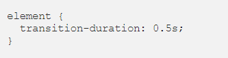

Week 8- Transforms and Transitions and Canvas, SVG, and Drag and Drop summarized
Transforms and Transitions
CSS transforms and transitions are a powerful way to enhance and delight user experiences on the web. For clarity, we discuss Css transitions and transforms independently. Firstly lets start with Css transitions:
Transitons
CSS transitions allows you to change property values smoothly, over a given duration.Without transitions this change would be abruot and take effect immediately. There are four transitions properties, For the purpose of this lesson we are going to discuss the two most required transition properties, which are :Again, tansition-duration on the other hand makes specific time span of the transition. The declaration of the duration could be in seconds (s) or milliseconds (ms). the following image shows an example of tansition-duration:

mind you we have transition-timing-function and transition-delay, they also have their functions in changing property values. For more understanding the image below shows us a shorthand way of using the property together:
Transforms
Transforms allow us to move or change the appearance of an element on a 2D plane. In order for us to produce a smooth animation, it is important we use transitions with transforms. They are set in motion when an element changes state, such as on a hover. In order for us to specify location origin of the transforms we can use two seprate transforms property, such as transform-origin and transform-property.We have four different types of transforms, which are :Rotate
This transforms help to rotates an element clockwise or anticlockwise by a specified number of degrees (deg).The positive value (90deg) will rotate the element clockwise while the negative value (.100deg) will rotate the element anticlockwise. Below is an image showing us sample of how the rotate transforms works:Skew
This transforms moves an elements base on values provided on the X and Y axis. A positive X value shift the elements left while a negative X value shifts it right. A positive Y value moves the element down, and a negative Y value moves it up. When onlyskew is stated and an axis isn't specified, that is equivalent to skewX. To move the element's angle you can include both the X and Y axis. For better undersyanding, see the image sample below:Scale
This transforms increases or decreases the size of an element. The size of an element can be scaled by the X-axis, Y-axis or both. We have the shorthand methodscale() that will effect both axes at the same time. The image sample below display scale at work:Translate
This transforms shifts an element right, left, up or down. A positive X value moves the element to the right and a negative X value moves the element to the left, while a positive Y value moves the element downwards and a negative Y value moves the element upwards.Below is sample image showing translate transforms:We can combine multiple transforms to an elements as this will enable us to get really fancy! the example below shows how multiple transforms works:
Canvas, SVG, and Drag and Drop
canvas helps to improve the performance of our websites by avoiding the need to download images off the network. With canvas, we can draw shapes and lines, arcs and text, gradients and patterns. using canvas we first need to create it element to the page.var canvas = document.getElementById("myCanvas");
Canvas is an important concept to learn and have a knowledge of to enable us a feel of what it takes to draw using canvas element.
Drag and drop
Drag and drop is a very common feature. It is when you "grab" an object and drag it to a different location. to make an object draggable you first need to set draggable attribut totrue the following image sample shows us how to do this.When the dragged data is dropped, a drop event occurs.The example image shows the code sample:
For better understanding below is the Code explanation in a bullet point.